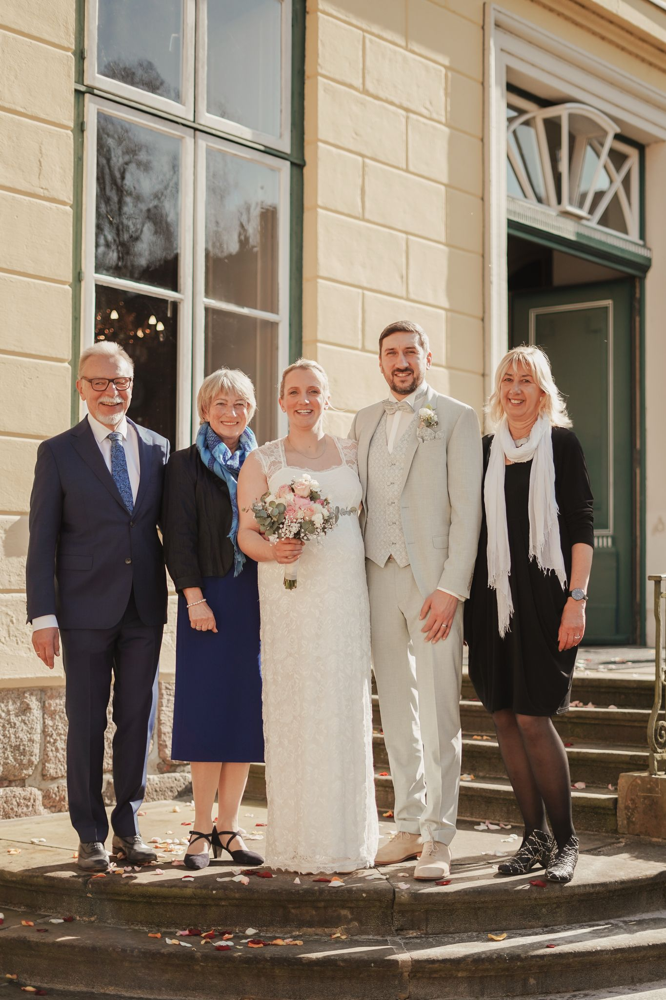
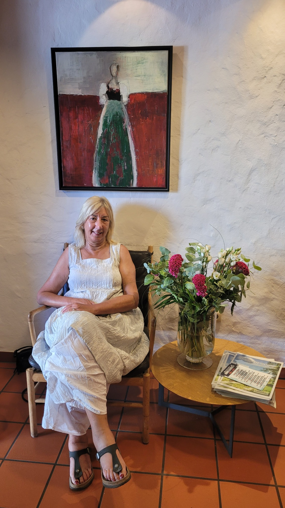
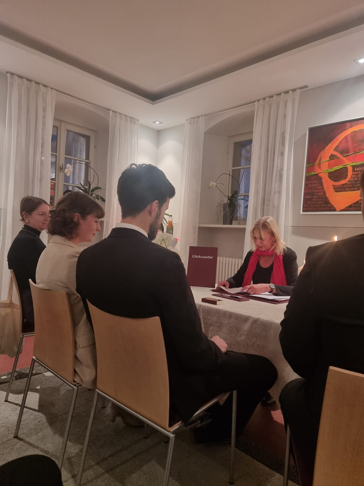
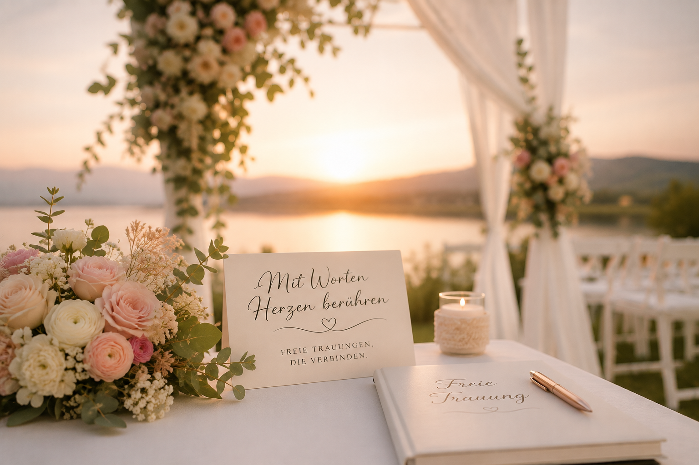
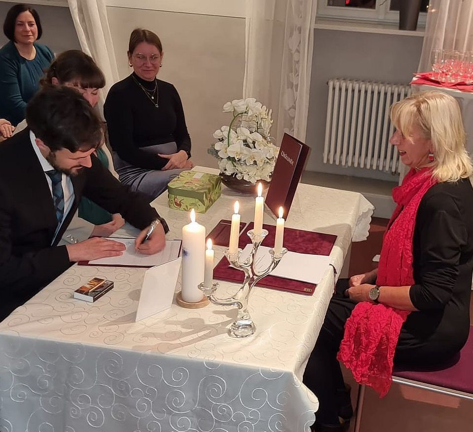

Kennenlernen
Wir sprechen über eure Wünsche, eure Feier und das Gefühl, das eure Trauung haben soll.
Eure Geschichte. Eure Worte. Euer Moment.
Persönlich, lebendig und mit genau der richtigen Mischung aus Gefühl, Humor und Leichtigkeit.

♡
Hi, ich bin Martina
Jede Beziehung hat ihren eigenen Klang: kleine Insider, große Gefühle, verrückte Umwege und leise Augenblicke. Aus euren Geschichten entsteht eine Rede, die niemand sonst halten könnte.
Mir ist wichtig, dass ihr euch gesehen fühlt – nicht inszeniert. Eure Zeremonie wird modern, authentisch und genauso feierlich, wie es zu euch passt.
Vom ersten Hallo bis zum Ja
Wir sprechen über eure Wünsche, eure Feier und das Gefühl, das eure Trauung haben soll.
In einem ausführlichen Gespräch sammle ich die großen und kleinen Momente eurer Beziehung.
Ich entwickle eure Rede, den roten Faden und auf Wunsch persönliche Rituale oder Beiträge.
Am Hochzeitstag führe ich euch und eure Gäste herzlich und entspannt durch die Zeremonie.
Echte Augenblicke
Eine freie Trauung darf emotional sein, ohne kitschig zu werden – und humorvoll, ohne den Moment kleinzumachen.



Lust auf ein erstes Kennenlernen?
Schreibt mir ein paar Zeilen zu euch, eurem Termin und dem Ort der Feier. Ich melde mich persönlich bei euch zurück.